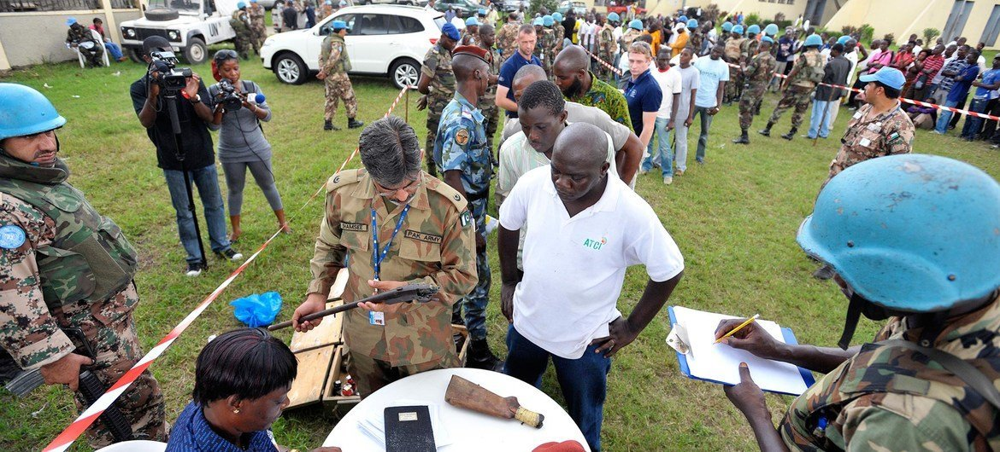
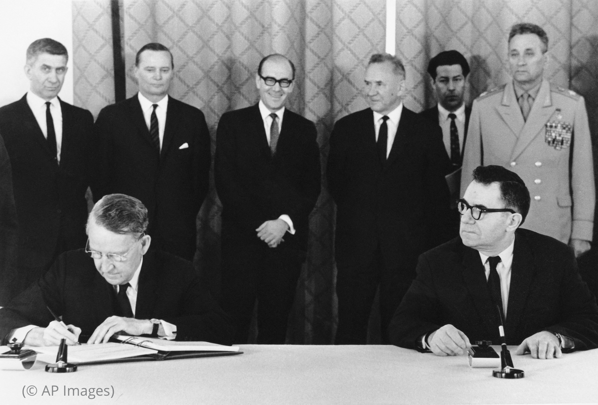

Desarme de Sudáfrica
Después del fin del régimen del apartheid en 1994, Sudáfrica desmanteló su arsenal de armas nucleares, convirtiéndose en el único país en renunciar voluntariamente a un programa nuclear militar completo. Este proceso fue considerado un éxito en los esfuerzos de desarme nuclear.
Acuerdo de Paz de Colombia
En 2016, el gobierno colombiano y las Fuerzas Armadas Revolucionarias de Colombia (FARC) firmaron un acuerdo de paz para poner fin a décadas de conflicto armado. Como parte del acuerdo, las FARC entregaron sus armas y se comprometieron a transformarse en un partido político.
Desarme en Mozambique
En 1992, el Gobierno de Mozambique y la Resistencia Nacional Mozambiqueña (RENAMO), un grupo insurgente, firmaron un acuerdo de paz que incluía el desarme y la reintegración de combatientes en la sociedad. Este acuerdo puso fin a una larga guerra civil en el país.
Eliminación de Minas Terrestres en Camboya
Después de años de conflicto y la implantación de minas terrestres en Camboya, se realizaron esfuerzos significativos para despejar estas minas y hacer que el país fuera seguro para la población civil. Organizaciones como el Centro de Acción contra las Minas de la ONU (UNMACC) trabajaron en la eliminación de minas y la educación sobre el peligro que representan.
Desarme en Liberia
En 2003, el Gobierno de Liberia y varios grupos rebeldes firmaron un acuerdo de paz que incluía la desmovilización y el desarme de combatientes. Este acuerdo fue crucial para poner fin a años de conflicto en el país.
Convención sobre Armas Químicas
La Convención sobre las Armas Químicas es un tratado internacional que prohíbe la producción, posesión y uso de armas químicas y exige su destrucción. A través de esta convención, se ha logrado la destrucción de grandes cantidades de armas químicas en varios países.
Proceso de Paz en Irlanda del Norte
El Acuerdo de Viernes Santo en 1998 marcó el fin de décadas de conflicto en Irlanda del Norte. Aunque el proceso de paz fue complejo, finalmente condujo al desarme del grupo paramilitar IRA (Ejército Republicano Irlandés).
Desarme en Timor Oriental
Tras la independencia de Indonesia en 1999, Timor Oriental se embarcó en un proceso de desarme y desmovilización de grupos armados, lo que permitió establecer un estado más seguro y estable.
Desarme en Sierra Leona
Después de una devastadora guerra civil, el proceso de paz en Sierra Leona incluyó el desarme de miles de combatientes y la reintegración en la sociedad. Este proceso fue supervisado por la Misión de las Naciones Unidas en Sierra Leona (UNAMSIL).

Tratado de No Proliferación Nuclear (TNP)
Aunque no ha logrado la eliminación completa de las armas nucleares, el TNP ha contribuido a limitar la proliferación nuclear al comprometer a las naciones a evitar la expansión de arsenales nucleares y trabajar hacia su desarme.
